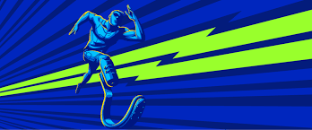
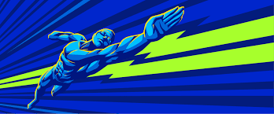
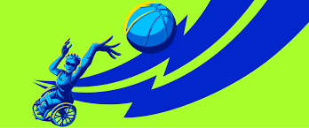
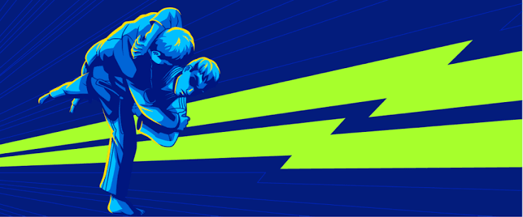
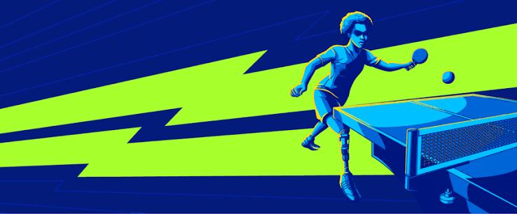

Atletismo
O atletismo paralímpico reúne provas de corrida, saltos e lançamentos, com adaptações de acordo com a classe esportiva do atleta.

O atletismo paralímpico reúne provas de corrida, saltos e lançamentos, com adaptações de acordo com a classe esportiva do atleta.

A natação paralímpica possui provas de diferentes distâncias e estilos, com classificações específicas para os atletas.

Modalidade coletiva praticada por atletas que utilizam cadeira de rodas durante as partidas.
Esporte criado para pessoas com deficiência visual, no qual os jogadores utilizam o som da bola para localizar sua trajetória.

Modalidade de combate praticada por atletas com deficiência visual.

O tênis de mesa paralímpico pode ser praticado por atletas com diferentes tipos de deficiência, com adaptações específicas.